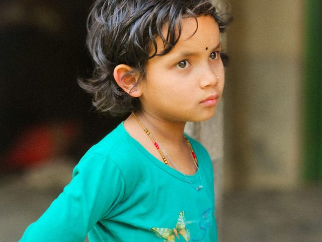
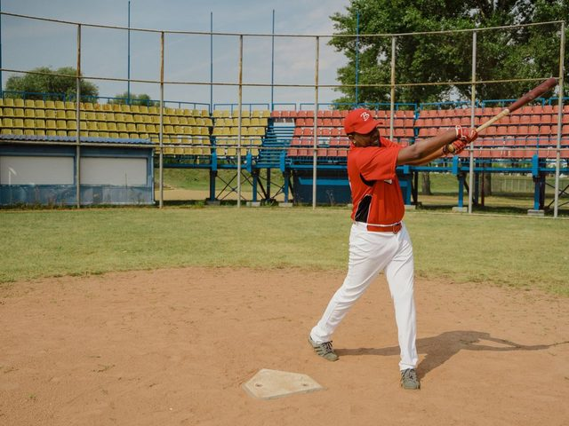
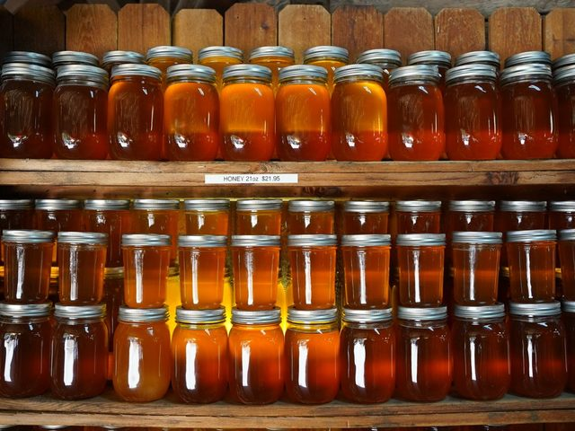
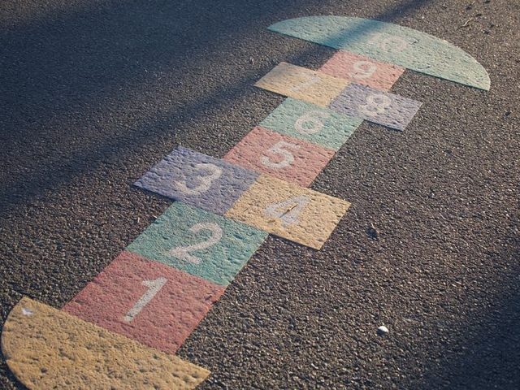
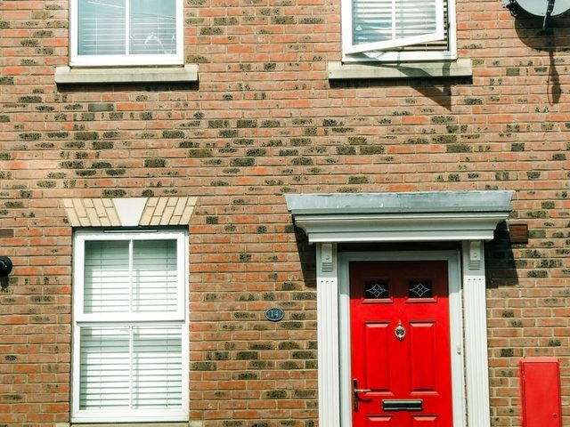
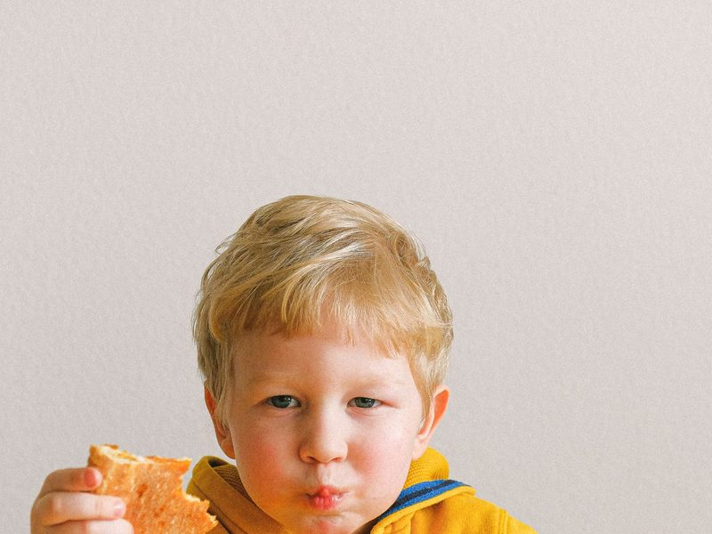

VOCABULARY · WORD UP 單字複習 UNIT 24
H-II．H 開頭（二）
WORD UP「H-II」的 42 個字（hip 到 husband）。紅色＝要複習，藍色標籤＝WORD UP 標熟記、還要在這裡考對。
共 42 個單字．點 🔊 聽發音

1hipn.
臀部；屁股
She put her hands on her hips.她雙手插腰。
2hippopotamusn.
河馬
= hippo
A hippopotamus can stay under water for minutes.河馬可以在水裡待好幾分鐘。

3hirev.
雇用；租用
= employ
The store hired two new workers.那家店雇了兩個新員工。
4historyn.
歷史
I am interested in Taiwanese history.我對台灣歷史有興趣。

5hitv.
打；撞
三態都是 hit
The ball hit the window.球打到窗戶。
6hobbyn.
嗜好
複數 hobbies
My hobby is drawing.我的嗜好是畫畫。

7holdv.
握著；舉辦
三態 hold-held-held；hold on 等一下
Hold on, please.請稍等。
8holen.
洞
There is a hole in my sock.我的襪子破了一個洞。

9holidayn.
假日；節日
on holiday 度假中
We went to Kenting during the holiday.假期我們去了墾丁。
10homen./adv.
家；在家
go home（不加 to）
It's time to go home.該回家了。
11homesickadj.
想家的
She felt homesick when she studied abroad.她出國讀書時很想家。

12homeworkn.
功課；家庭作業
不可數
I have a lot of homework today.我今天有很多功課。
13honestadj.
誠實的
h 不發音，前面用 an
He is an honest boy.他是個誠實的男孩。
14honestyn.
誠實
Honesty is the best policy. 誠實為上策
Honesty is the best policy.誠實為上策。

15honeyn.
蜂蜜；親愛的
Bees make honey.蜜蜂會釀蜂蜜。

16Hong Kongn.
香港
We went shopping in Hong Kong.我們去香港購物。

17hopv.
單腳跳；跳躍
過去式 hopped
The rabbit hopped away.兔子跳走了。
18hopev./n.
希望
hope + to V／that…
I hope to see you soon.希望很快見到你。
19horribleadj.
可怕的；糟透的
The weather is horrible today.今天天氣糟透了。

20horsen.
馬
ride a horse 騎馬
Have you ever ridden a horse?你騎過馬嗎？
21hospitaln.
醫院
in (the) hospital 住院
Grandpa is in the hospital.爺爺在住院。
22hostn./v.
主人；主持人；主辦
guest 客人
Who will host the party?誰要主辦派對？

23hotadj.
熱的；辣的
比較級 hotter
It's hot in summer.夏天很熱。
24hoteln.
飯店；旅館
We stayed at a hotel near the beach.我們住在海邊的一家飯店。
25hourn.
小時
h 不發音，前面用 an
I waited for an hour.我等了一個小時。

26housen.
房子
They live in a big house.他們住在一棟大房子裡。
27howadv.
如何；多麼
How about…? …怎麼樣
How about going to the park?去公園怎麼樣？
28Hualienn.
花蓮
Hualien is famous for Taroko Gorge.花蓮以太魯閣峽谷聞名。
29hugeadj.
巨大的
= very big
An elephant is huge.大象很巨大。
30humanadj./n.
人類的；人
human being 人類
Dogs are humans' best friends.狗是人類最好的朋友。
31humbleadj.
謙虛的
He is famous but humble.他很有名但很謙虛。

32humidadj.
潮濕的
Taiwan is hot and humid in summer.台灣夏天又熱又濕。
33humorn.
幽默
a sense of humor 幽默感
Our teacher has a good sense of humor.我們老師很有幽默感。
34humorousadj.
幽默的
He told a humorous story.他說了一個幽默的故事。
35hundredn.
百
two hundred（不加 s）；hundreds of 數以百計
There are two hundred students in our grade.我們年級有兩百個學生。
36hungern.
飢餓
Many people die of hunger.很多人死於飢餓。

37hungryadj.
飢餓的
I'm hungry. Let's eat.我餓了，我們吃飯吧。
38huntv.
打獵；搜尋
Lions hunt at night.獅子在晚上狩獵。

39huntern.
獵人
The hunter walked into the forest.獵人走進森林。
40hurryv./n.
趕快；匆忙
Hurry up! 快點；in a hurry 匆忙
Hurry up, or we'll be late.快點，不然我們會遲到。
41hurtv.
使受傷；疼痛
三態都是 hurt
My leg hurts.我的腳很痛。
42husbandn.
丈夫
wife 妻子
Her husband is a cook.她的丈夫是廚師。
FOCUS
重點整理
| 說法 | 中文 | 例子 |
|---|---|---|
| honest / hour（h 不發音） | 前面用 an | an honest man ／ an hour |
| humor / humorous | 幽默（名詞）／ 幽默的（形容詞） | a sense of humor ／ a humorous story |
| hunger / hungry | 飢餓（名詞）／ 餓的（形容詞） | die of hunger ／ I'm hungry. |
| hope to V / hope that… | 希望… | I hope to win. ／ I hope that you win. |
| go home | 回家（不加 to） | go home after school |
| Hurry up! / in a hurry | 快點 ／ 匆忙 | He left in a hurry. |
| two hundred / hundreds of | 兩百 ／ 數以百計的 | hundreds of people |
hit、hurt 三態都一樣；hold 的過去式 held。